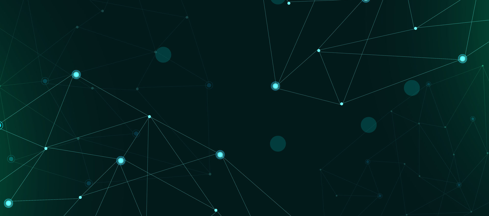
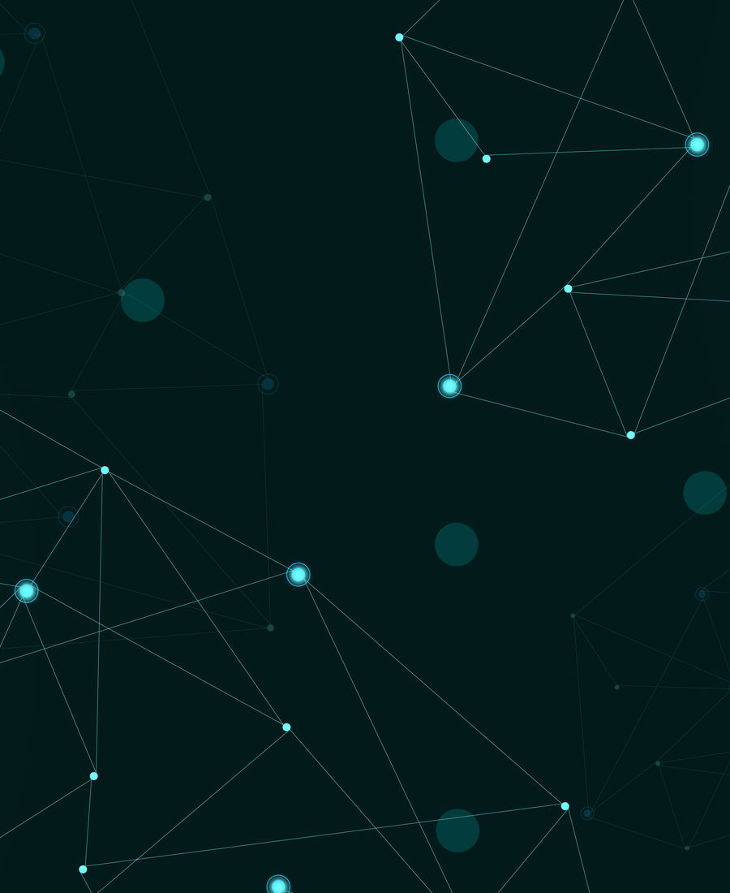
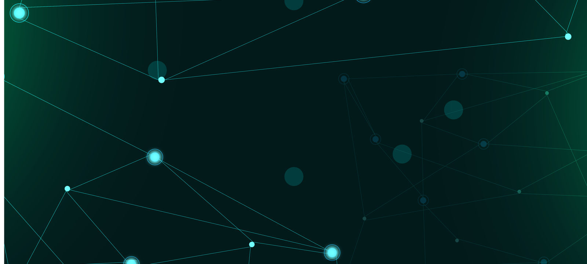
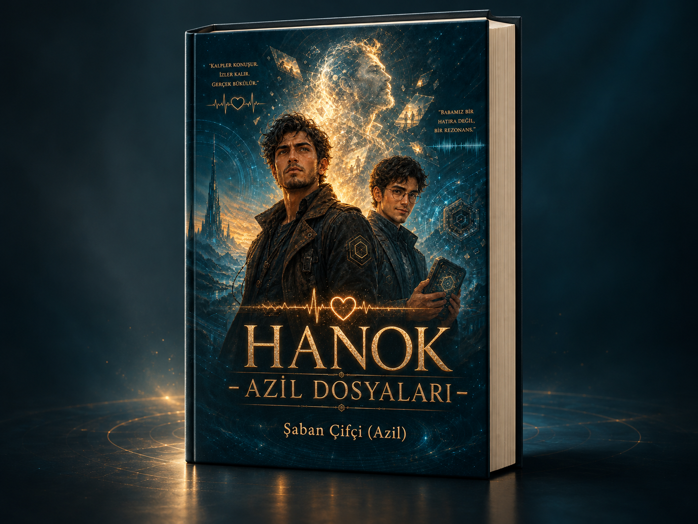
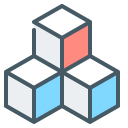

AZiL / Asset library
Görsel Kütüphanesi
AZiL sitesinin arka plan ve ikon dosyaları için GitHub Pages önizleme sayfası. Bu sayfa mevcut AZiL sitesinin yerini almaz.
Görsel testi / Ana sayfa
Oyna. Oku. Keşfet.
Arka plan görseli burada doğru yükleniyorsa statik dosya yolu çalışıyor demektir.
Arka planlar



HANOK · Roman vitrini

HANOK – AZİL DOSYALARI
Romanın dijital tanıtımında kullanılan 3D kitap maketi. Eser EPUB biçiminde yayımlanmıştır; görsel fiziksel baskı ilanı değildir.
HANOK sayfasına gitTeknoloji ikonları
ana-sayfa
oyunlar
uygulamalar
projeler
azil-studyo

bitcoinweb
yazilim
yapay-zeka
grafik
guvenlik
performans